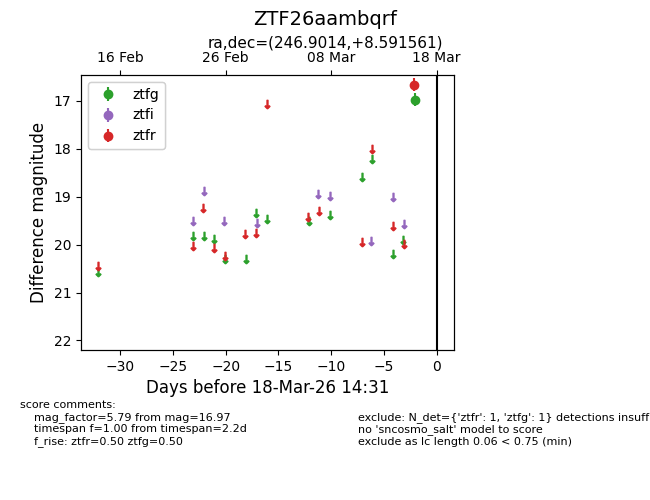
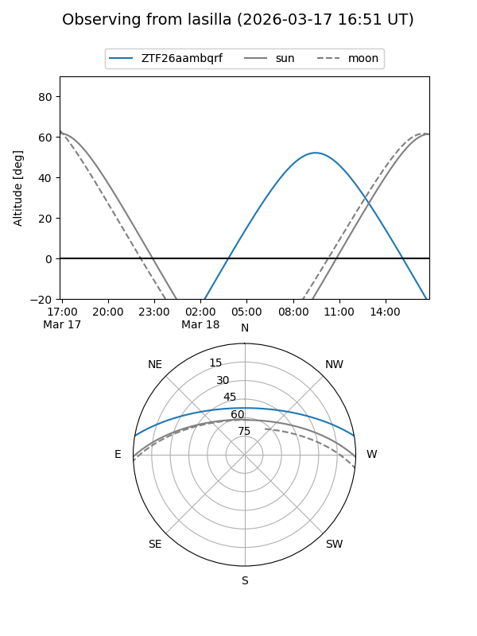
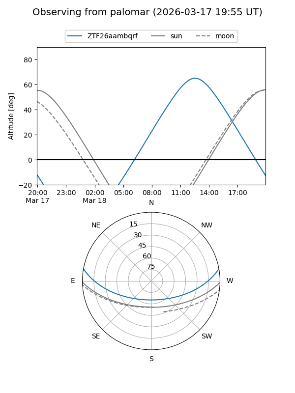

ZTF26aambqrf
Target ZTF26aambqrf at 2026-03-18 14:33
Aliases and brokers:
FINK: link
Lasair: link
ALeRCE: link
alt names
ZTF26aambqrf (ztf,fink_ztf)
Coordinates:
equatorial (ra, dec) = 246.9014,+8.59156
equatorial (HMS+DMS) = 16:27:36.33,+08:35:29.62
galactic (l, b) = (23.5813,+35.79241)
Flags:
Photometry:
last ztfg=16.97, ztfr=16.66
1 ztfg, 1 ztfr detections
Lightcurve

Visibility


Additional plots